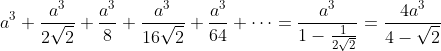

Zadatak
Na kocku duljine brida a postavi se nova kocka kojoj vrhovi donje osnovice leže u polovištima bridova gornje osnovice prve kocke. Na isti način se na drugu kocku postavi treća kocka, na treću kocku četvrta kocka itd. Odredite zbroj volumena svih ovih kocaka.
Rješenje. Duljine bridova kocki čine geometrijski niz:

Volumeni kocki također čine geometrijski niz:
Suma volumena svih kocki jednaka je sumi pripadnog geometrijskog reda:
